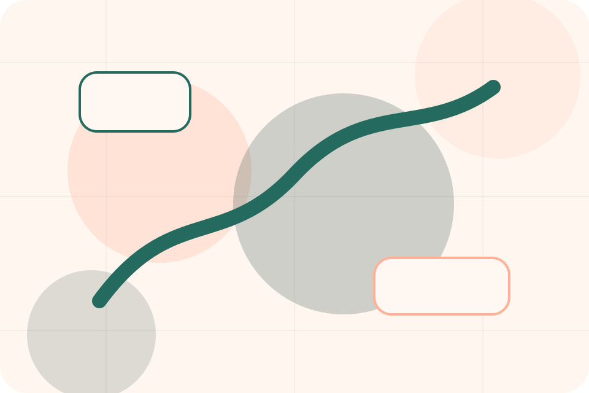
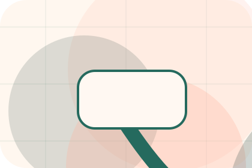
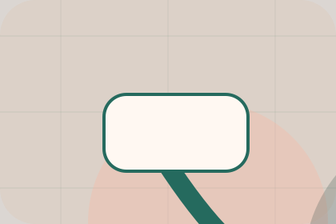

Emergency / 01
Emergency by Paw
Emergency shaped for pets, animals & veterinary services decisions.
Emergency opens as a clear pets decision hub: what Paw offers, who it helps, why it matters, and which route to take first.
The first screen combines positioning, proof, primary action, and fast internal navigation, so people can act immediately or compare the rest of the emergency route with context.
Clear intakeHuman follow-upPractical reassurance
Warm appointment hero
Route the care need
Select the closest route and Paw keeps the next step, proof, and follow-up expectation aligned with care and quick triage.

Emergency / 02
Symptoms: what to solve
Symptoms frames the pressure behind the visit, then connects it to a practical path visitors can recognise and act on.
The copy avoids blame and panic. It shows the common friction, the practical consequence, and the calmer route Paw uses to move people forward.
Explore EmergencyPressure
Symptoms names the real friction visitors bring to the emergency route, so the page feels relevant before any claim is made.
Consequence
The copy connects that friction to practical risk, delay, confusion, or missed opportunity without exaggerating it.
Safer Step
The final cue moves visitors toward a clearer route instead of leaving them with the problem alone.
Emergency / 03
How the steps path works
Steps explains the operating sequence so visitors can see how the first request becomes a clear recommendation and follow-up.
The steps are written from the visitor side: what they do first, what Paw clarifies, what they receive, and how support continues.
Explore EmergencyStart
How visitors begin this route and what detail is useful at the first step.
Emergency / 04
Send the right details
Call makes the contact path concrete: what to send, how the response works, and what Paw needs before visitors book a visit.
The section reduces contact friction by naming the channel, expected detail, privacy path, and response expectation instead of dropping visitors into a generic form.
Explore EmergencyDetails
What information helps Paw respond with a useful answer instead of a generic reply.
Timing
How the visitor should think about response, urgency, location, or availability.

Reply
The expected next message keeps scope, timing, and the first practical step clear.
Emergency / 05
Send the right details
Directions makes the contact path concrete: what to send, how the response works, and what Paw needs before visitors book a visit.
The section reduces contact friction by naming the channel, expected detail, privacy path, and response expectation instead of dropping visitors into a generic form.
Explore Emergency- 01
Details
What information helps Paw respond with a useful answer instead of a generic reply.
- 02
Timing
How the visitor should think about response, urgency, location, or availability.
- 03
Reply
The expected next message keeps scope, timing, and the first practical step clear.
Emergency / 06
Send the right details
Hours makes the contact path concrete: what to send, how the response works, and what Paw needs before visitors book a visit.
The section reduces contact friction by naming the channel, expected detail, privacy path, and response expectation instead of dropping visitors into a generic form.
Explore EmergencyDetails
What information helps Paw respond with a useful answer instead of a generic reply.
Timing
How the visitor should think about response, urgency, location, or availability.
Reply
The expected next message keeps scope, timing, and the first practical step clear.
Emergency / 07
Send the right details
Bring makes the contact path concrete: what to send, how the response works, and what Paw needs before visitors book a visit.
The section reduces contact friction by naming the channel, expected detail, privacy path, and response expectation instead of dropping visitors into a generic form.
Explore EmergencyDetails
What information helps Paw respond with a useful answer instead of a generic reply.
Emergency / 08
Send the right details
Aftercare makes the contact path concrete: what to send, how the response works, and what Paw needs before visitors book a visit.
The section reduces contact friction by naming the channel, expected detail, privacy path, and response expectation instead of dropping visitors into a generic form.
Explore EmergencyDetails
What information helps Paw respond with a useful answer instead of a generic reply.
Timing
How the visitor should think about response, urgency, location, or availability.
Reply
The expected next message keeps scope, timing, and the first practical step clear.
Emergency / 09
Send the right details
Urgent makes the contact path concrete: what to send, how the response works, and what Paw needs before visitors book a visit.
The section reduces contact friction by naming the channel, expected detail, privacy path, and response expectation instead of dropping visitors into a generic form.
Explore Emergency- 01
Details
What information helps Paw respond with a useful answer instead of a generic reply.
- 02
Timing
How the visitor should think about response, urgency, location, or availability.
- 03
Reply
The expected next message keeps scope, timing, and the first practical step clear.
Emergency / 10
Book Visit
Paw closes the emergency route with a clear action, a quick reminder of the value, and a low-friction way to book a visit.
Visitors who are ready can use the primary action. Visitors who are still comparing can scan the section links, proof, and support routes before they book a visit.
Book VisitThe final block keeps the choice simple: act now, compare one more proof route, or send enough detail for a focused response.
Book Visitcare and quick triage
Book Visit
A veterinary site with warm urgent-care modules, appointment paths, team proof, and symptom routing. Emergency ends with a direct path to book a visit, plus enough context for visitors who still need to compare.

Book VisitImportant notes before you act
Pet health content is general; urgent symptoms require direct veterinary care.